| 특별한 아이템 | |||
|---|---|---|---|
| 품목 | 가격 | ||
| 만능우산 |
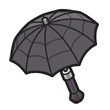 |
뭐든지 될 수 있는 접이식 만능우산. 99개 한정판이다. |
200TCK 마지막 단 하나! |
| 금색병뚜껑 |
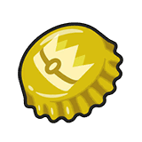 |
금색의 아름다운 병뚜껑. 엄청난 특훈을 할 수 있다. |
60TCK 인당 한 개까지 |
| 은색병뚜껑 |
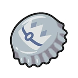 |
은색의 아름다운 병뚜껑. 대단한 특훈을 할 수 있다. |
25TCK 구매수 제한 없음 |
| 빨간실 |
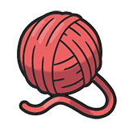 |
가늘고 긴 인연의 상징. 고백할 수 있다. |
5TCK 구매수 제한 없음 |
| 운명티켓 |
행선지 불명의 티켓. 산호항만에서 승선할 수 있다. |
100TCK 구매수 제한 없음 |
|
| 진화 아이템 | |||
| 품목 | 가격 | ||
| 특성캡슐 |
단맛이 나는 캡슐. 포켓몬의 특성을 바꿀 수 있다. |
50TCK 구매수 제한 없음 |
|
| 연결의끈 |
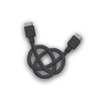 |
신비한 에너지가 담긴 끈. 어떤 포켓몬을 진화시킨다. |
30TCK 구매수 제한 없음 |
| 프로텍터 |
무언가의 프로텍터. 매우 단단하고 무겁다. |
10TCK 구매수 제한 없음 |
|
| 휘핑팝 |
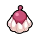 |
풍성하게 거품을 낸 크림. 머리에 얹을 수 있다. |
10TCK 구매수 제한 없음 |
| 영계의천 |
무섭고 강한 영력이 담겨 있는 천. 불길한 예감이 든다. |
10TCK 구매수 제한 없음 |
|
| 향기주머니 |
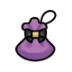 |
향기가 나는 향료를 채운 주머니. 가볍다. |
10TCK 구매수 제한 없음 |
| 왕의징표석 |
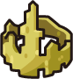 |
왕관을 닮은 돌. 지니게 하면 공격해서 데미지를 줄 때 상대를 풀죽이기도 한다. |
10TCK 구매수 제한 없음 |
| 성장 아이템 | |||
| 품목 | 가격 | ||
| 맥스업 |
딸기맛이 나는 영양 드링크. HP 노력치를 10점 올린다. |
15TCK 구매수 제한 없음 |
|
| 타우린 |
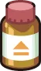 |
말차맛이 나는 영양 드링크. 공격 노력치를 10점 올린다. |
15TCK 구매수 제한 없음 |
| 사포닌 |
초코맛이 나는 영양 드링크. 방어 노력치를 10점 올린다. |
15TCK 구매수 제한 없음 |
|
| 리보플라빈 |
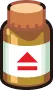 |
죽순맛이 나는 영양 드링크. 특수공격 노력치를 10점 올린다. |
15TCK 구매수 제한 없음 |
| 키토산 |
매운맛이 나는 영양 드링크. 특수방어 노력치를 10점 올린다. |
15TCK 구매수 제한 없음 |
|
| 알칼로이드 |
바닐라맛이 나는 영양 드링크. 스피드 노력치를 10점 올린다. |
15TCK 구매수 제한 없음 |
|
| 지니는 물건 | |||
| 품목 | 가격 | ||
| 검은철구 |

|
지니게 하면 스피드가 떨어진다. 비행타입이나 부유포켓몬은 땅 기술에 맞아 버린다. |
1TCK 구매수 제한 없음 |
| 느림보꼬리 |
매우 무거운 무언가의 꼬리. 지니게 하면 여느 때보다 행동이 느려진다. |
8TCK 구매수 제한 없음 |
|
| 조개껍질방울 |
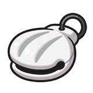 |
지니게 한 포켓몬이 공격하여 상대에게 데미지를 줬을 때 HP를 조금 회복할 수 있다. |
8TCK 구매수 제한 없음 |
| 광각렌즈 |
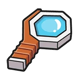 |
물건이 크게 보이는 렌즈. 지니게 하면 기술의 명중률이 조금 올라간다. |
8TCK 구매수 제한 없음 |
| 초점렌즈 |
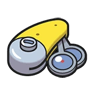 |
약점이 보이는 렌즈. 지니게 한 포켓몬의 기술이 급소에 맞기 쉬워진다. |
8TCK 구매수 제한 없음 |
| 포커스렌즈 |
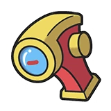 |
지니게 한 포켓몬이 상대보다도 행동하는 것이 늦을 때 기술이 명중하기 쉬워진다. |
8TCK 구매수 제한 없음 |
| 메트로놈 |
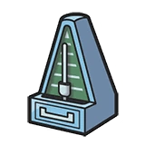 |
지니게 하면 똑같은 기술을 연속으로 사용했을 때 위력이 올라간다. 그만두면 위력이 되돌아간다. |
8TCK 구매수 제한 없음 |
| 타입별 주얼 |
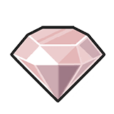 |
각 타입 별의 주얼. 지니게 하면 한 번만 그 타입 기술의 위력이 강해진다. |
8TCK 구매수 제한 없음 |
| 눈덩이 |
단 한 번 쓰면 없어지는 눈덩이. 지니게 하고 얼음 기술을 받으면 공격이 올라간다. |
10TCK 구매수 제한 없음 |
|
| 빛이끼 |
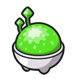 |
단 한 번 쓰면 없어지는 빛이끼. 지니게 하고 물 기술을 받으면 특수방어가 올라간다. |
10TCK 구매수 제한 없음 |
| 충전지 |
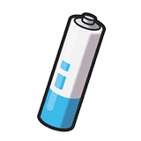 |
단 한 번 쓰면 없어지는 충전지. 지니게 하고 전기 기술을 받으면 공격이 올라간다. |
10TCK 구매수 제한 없음 |
| 구근 |
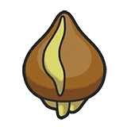 |
단 한 번 쓰면 없어지는 구근. 지니게 하고 물 기술을 받으면 특수공격이 올라간다. |
10TCK 구매수 제한 없음 |
| 주눅구슬 |
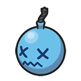 |
포켓몬에게 지니게 하면 위협을 받았을 때 스피드가 올라간다. |
10TCK 구매수 제한 없음 |
| 목스프레이 |
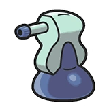 |
소리 기술을 사용하면 특수공격이 올라간다. |
10TCK 구매수 제한 없음 |
| 그라운드코트 |
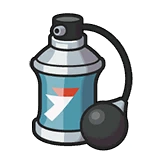 |
지니게 한 포켓몬이 필드를 사용했을 때 여느 때보다 긴 시간 동안 지속된다. |
15TCK 구매수 제한 없음 |
| 빛의점토 |
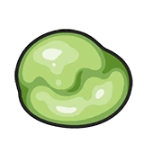 |
지니게 한 포켓몬이 빛의장막이나 리플렉터를 사용했을 때 여느때보다 긴 시간동안 지속된다. |
15TCK 구매수 제한 없음 |
| 룸서비스 |
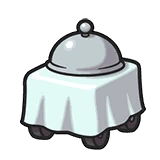 |
포켓몬에게 지니게 하면 트릭룸일 때 사용하여 스피드가 떨어진다. |
15TCK 구매수 제한 없음 |
| 파워풀허브 | 지니게 한 포켓몬은 한 번만 1턴째에 힘을 모으는 기술을 바로 사용할 수가 있다. |
15TCK 구매수 제한 없음 |
|
| 멘탈허브 |
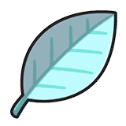 |
지니게 한 포켓몬은 헤롱헤롱한 상태가 되었을 때 한 번만 회복한다. |
15TCK 구매수 제한 없음 |
| 하양허브 |
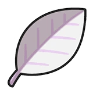 |
지니게 한 포켓몬의 능력이 떨어졌을 때 한 번만 원래 상태로 돌아온다. |
15TCK 구매수 제한 없음 |
| 풍선 |
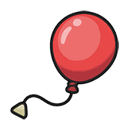 |
포켓몬에게 지니게 하면 포켓몬이 공중에 뜬다. 공격을 받으면 터지고 만다. |
15TCK 구매수 제한 없음 |
| 기합의띠 | 지니게 하면 HP가 꽉 찼을 때 기절할 듯한 기술을 받아도 HP 1로 한 번은 버틴다. |
15TCK 구매수 제한 없음 |
|
| 약점보험 |
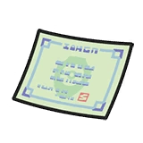 |
약점을 공격당했을 때 공격과 특수공격이 각각 크게 올라간다. |
20TCK 구매수 제한 없음 |
| 허탕보험 |
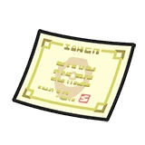 |
기술이 빗나갔을 때 스피드가 크게 올라간다. |
20TCK 구매수 제한 없음 |
| 탈출팩 |
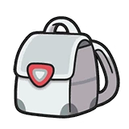 |
지니게 한 포켓몬의 능력이 떨어지면 지닌 포켓몬과 교체한다. |
20TCK 구매수 제한 없음 |
| 탈출버튼 | 지니게 하고 기술을 받으면 배틀에서 탈출하여 지닌 포켓몬과 교체할 수 있다. |
20TCK 구매수 제한 없음 |
|
| 속임수주사위 |
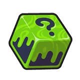 |
좋은 눈만 나오는 주사위. 지니게 하고 연속 기술을 사용하면 많은 횟수로 기술을 사용할 수 있다. |
25TCK 구매수 제한 없음 |
| 생명의구슬 | 지니게 하면 공격할 때마다 HP가 조금씩 줄지만 기술의 위력이 올라간다. |
25TCK 구매수 제한 없음 |
|
| 돌격조끼 |
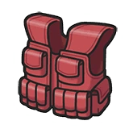 |
공격적으로 변하는 조끼. 지니게 하면 특수방어가 올라가지만 변화 기술을 쓸 수 없게 된다. |
25TCK 구매수 제한 없음 |
| 구애스카프 |
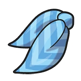 |
기술을 구애받는 스카프. 지니게 하면 스피드는 올라가지만 같은 기술밖에 쓸 수 없다. |
25TCK 구매수 제한 없음 |
| 구애안경 |
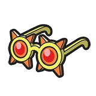 |
기술을 구애받는 안경. 지니게 하면 특수공격이 올라가지만 같은 기술밖에 쓸 수 없다. |
25TCK 구매수 제한 없음 |
| 구애머리띠 |
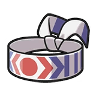 |
기술을 구애받는 머리띠. 지니게 하면 공격은 올라가지만 똑같은 기술밖에 쓰지 못한다. |
25TCK 구매수 제한 없음 |